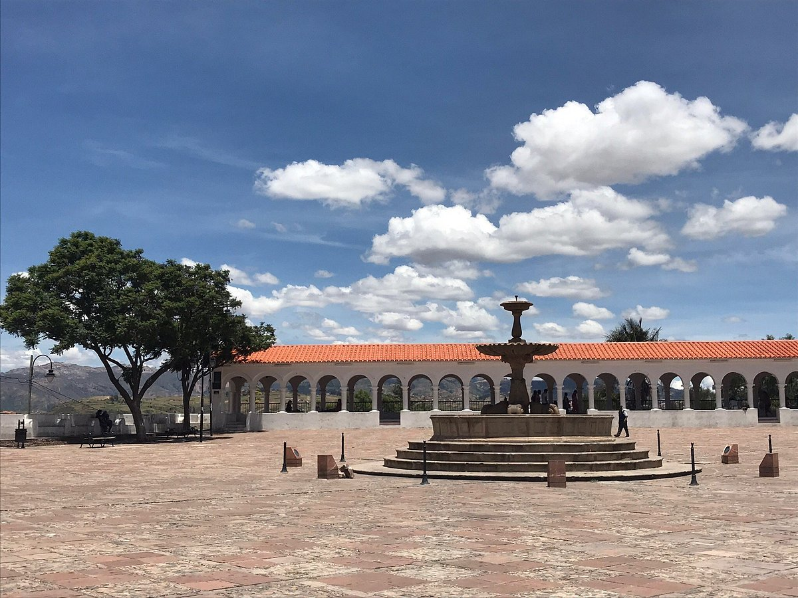

sucre es una ciudad hermosa de Bolivia con una arquitectura colonial impresionante y un ambiente vibrante. Es conocida por su rica historia, su cultura diversa y su gente amable. La ciudad cuenta con numerosos museos, iglesias y plazas que reflejan su pasado colonial y su importancia histórica. Además, Sucre es famosa por su clima agradable durante todo el año, lo que la convierte en un destino turístico popular. En resumen, Sucre es una ciudad encantadora que ofrece una experiencia única a sus visitantes.
Sucre es la capital constitucional de Bolivia y se encuentra en el centro-sur del país. Es conocida por su arquitectura colonial bien conservada, sus calles empedradas y su ambiente tranquilo. La ciudad tiene una rica historia y es un importante centro cultural y educativo en Bolivia. Sucre es famosa por su clima agradable durante todo el año, lo que la convierte en un destino turístico popular. Además, la ciudad cuenta con numerosos museos, iglesias y plazas que reflejan su pasado colonial y su importancia histórica. En resumen, Sucre es una ciudad encantadora que ofrece una experiencia única a sus visitantes. Sucre es una ciudad hermosa y encantadora que se encuentra en el corazón| SITIOS TURISTICOS | ||
|---|---|---|
| CASTILLO GLORIETA | IGLESIA DE SAN FRANCISCO | RECOLETA |
| MAS SITIOS TURISTICOS | ||

VOLVER A MENU